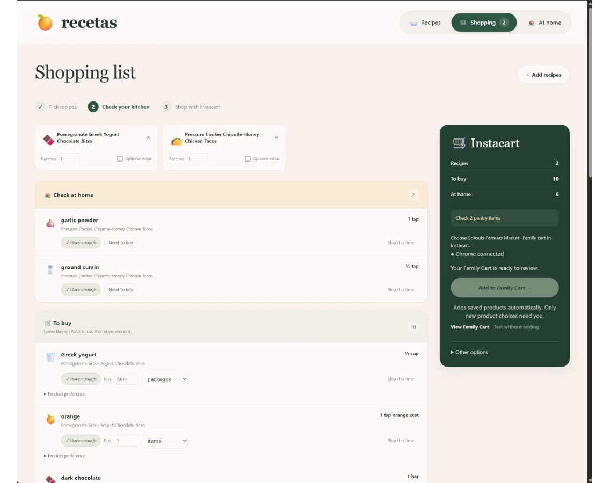

recetas05 / 11
Check the pantry before buying
Honey, cinnamon, olive oil and salt are already at home.
The shopping list skips those ingredients and combines shared amounts when their units match.
Unknown stock still needs a decision. Having a condiment once does not mean it lasts forever.
